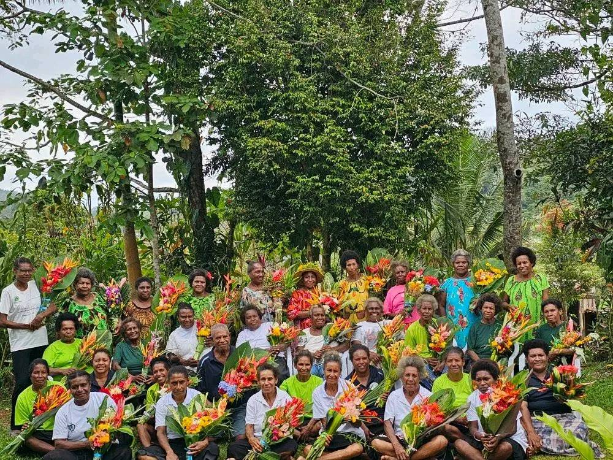
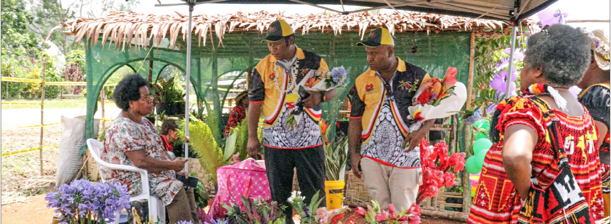
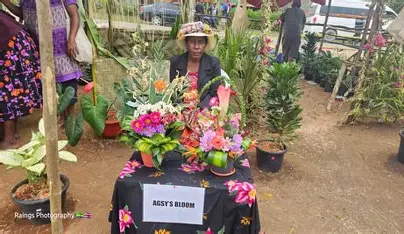

Fresh flowers
Seasonal stems and distinctive tropical blooms, cut fresh from our garden.
↗Papua New Guinea · Est. in Sogeri
Thoughtfully grown flowers, plants and botanical experiences rooted in the rich soil of Sogeri.

A little wild. A lot beautiful.
We believe the best things grow slowly — with care, character and a little bit of sunshine.
The place we call home
In the cool, generous hills of Sogeri, we grow flowers that carry a sense of place.
Our garden is shaped by Papua New Guinea's extraordinary landscape — its rain, its rich soil, and the people who know how to nurture both. Every stem is cultivated with patience and purpose.
Meet the growers →
Find the garden
Come visit us where the green hills meet the morning mist.
Open in Google Maps ↗What we cultivate
From a single statement bloom to a full botanical setting, we bring a considered, natural touch to every commission.
A glimpse of the garden

Let's make something grow
Tell us what you're dreaming up. We'd love to hear about it.
hello@sogerifloriculture.com ↗Sogeri Depo Village
Karakadabu Village
Central Province, PNG